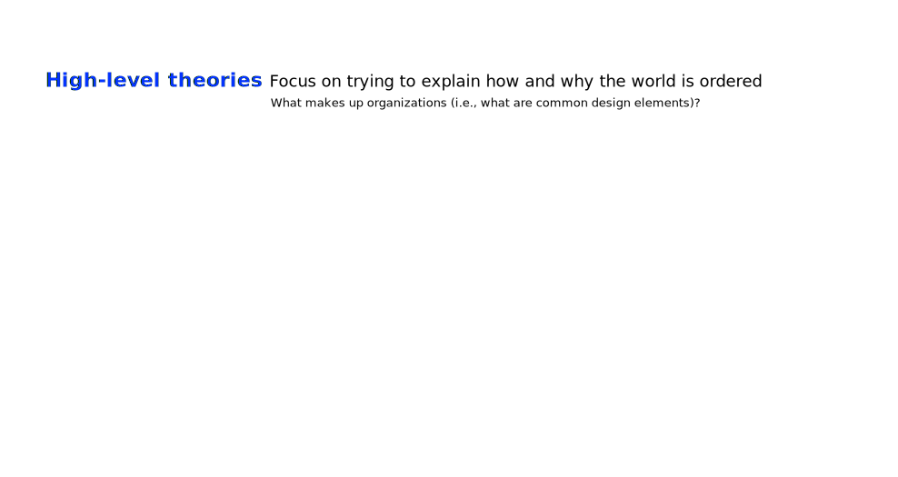
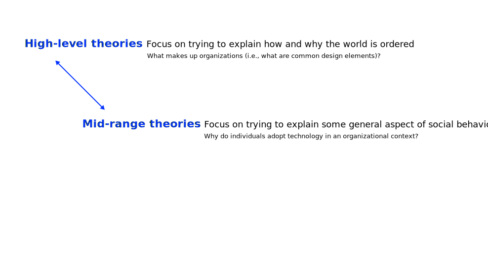
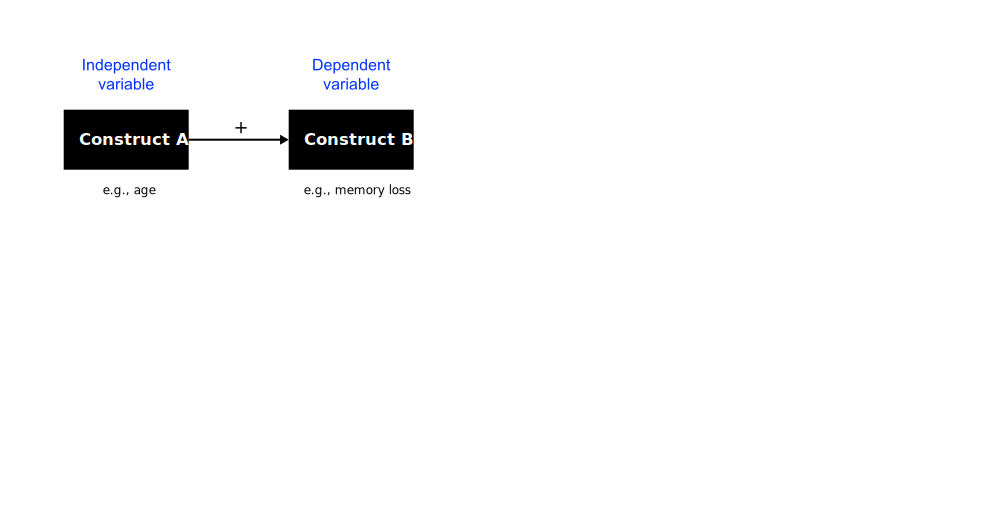
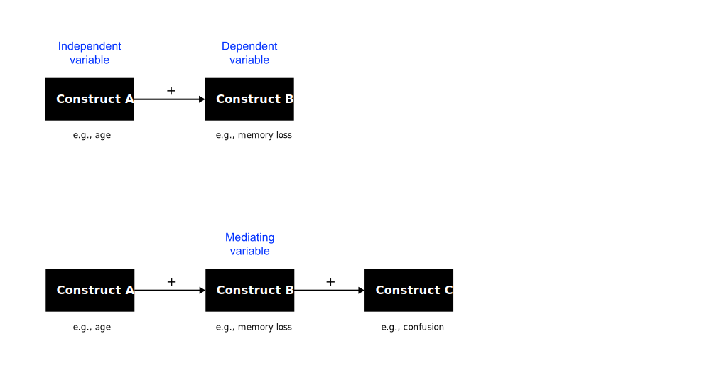
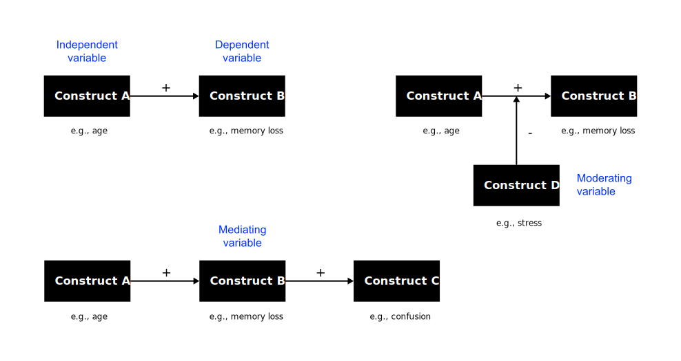

Theory
A general and abstract account of something
August 23, 2023
Exercise
Form small groups, have a look at your notes on Podsakoff, MacKenzie, and Podsakoff (2016) and synthesize your answers to the following questions:
- What is a concept?
- Why are clear conceptual definitions essential for scientific progress?
- How can such conceptual definitions be created?
Concepts
What do you see?
Definition
A concept is an abstract idea, notion, or mental representation that represents a specific category of objects, events, behaviors, or phenomena (Podsakoff, MacKenzie, and Podsakoff 2016).
Concepts are fundamental to human cognition and communication and to research in particular.
Visualization

Importance
Science is built on the cumulative advancement of knowledge that requires rigor.
In this regard, concepts enable e.g.
collaboration,
theoretical development,
empirical research &
theory testing
Guidelines
Podsakoff, MacKenzie, and Podsakoff (2016) propose a set of recommendations for creating better concept definitions:
clear and precise,
differentiated,
explicit &
theoretically founded
Operationalization
Theory
A theory is a general and abstract account of something.
Warm-up example
Many parents believe that the right name leads to economic prosperity
A study of California birth registry data from all year since 1961 shows that the name indeed correlates with economic prosperity.
Warm-up example
How can that be explained?
Warm-up example
Names are not the cause, they are just one manifestation of an underlying reason.
- Parents with different socio-economic status choose different names for their babies
- The name is a reflection of the socio-economic status, not the cause.
- Parents’ socio-economic status is a good predictor of offsprings’ socio-economic status
Definition
Sutton and Staw (1995) define theory as a comprehensive framework that goes beyond simple descriptions, hypotheses, data, or metaphors. A true theory provides a systematic and explanatory understanding of a set of phenomena, offering insights into the underlying mechanisms and causal relationships.
- Theory is about the connections between phenomena, a story about why actions, events, structures, and thoughts occur.
- Theory emphasizes the nature of causal relationships by determining what occurs first and the timing of such events.
- Theory delves into the underlying processes to understand the systematic reasons for a particular event or non-event.
- The theory is usually accompanied by *a series of convincing and logically coherent arguments.
What theory is not
Sutton and Staw (1995) argue that theory is often misunderstood and misused in academic and scholarly contexts. They provide a clear distinction between what theory is and what it is not:
Idiographic, universal, data, descriptive, hypotheses, models, design
Function
Theories guide and give meaning to what we see.
- Help to organize relevant empirical facts (i.e., what can be observed and measured) to provide description, explanation or prediction of phenomena
- Allow us to generalize from „the known“ to „the unknown“ (e.g., guide the design of artefacts)
Scientific theories
Theory is something we use all the time in our everyday life to construct explanations about the world in which we live.
What is specific to scientific theories?
According to Bacharach (1989), a scientific theory
- helps us to synthesize prior empirical findings and to reconcile contradictory findings by discovering contingent factors;
- can be empirically tested using scientific methods;
- needs to be able to be falsified, but not necessarily to be proven positive;
- offers guidance for future research by helping identify constructs (reflecting concepts) and hypotheses (relationships between the constructs)
- contributes to cumulative knowledge by bridging gaps between theories and causing existing theories to be re-evaluated
Levels of theory



Types of theory
Analysis
Explanation
Prediction
Explanation & prediction
Design & action
Which theories do you know?
Building blocks
Concepts and constructs
The “what” of theories.
- A construct is the operationalization of a concept that is chosen to explain the phenomenon (Podsakoff, MacKenzie, and Podsakoff 2016).
- Constructs must have clear and unambiguous operational definition that should specify exactly how the construct will be measured and at what level of analysis (individual, group, organizational, etc.).
- The constructs included in a theory must be equally comprehensive and parsimonious—all relevant concepts are included but but only those that enhance understanding (Whetten 1989).
Propositions and hypotheses
The “how” of theories.
Propositions are associations postulated at the theoretical level (they relate concepts), hypotheses are tested at the empirical level (they relate constructs) (Whetten 1989).
- Propositions are stated in declarative form and should ideally indicate a cause-effect relationship (e.g., if X occurs, then Y will follow).
- Propositions may be speculative but must be testable, and should be rejected if they are not supported by empirical observations.
Nomological nets



Logic
The “why” of theories.
The logic provides the basis for justifying the propositions as postulated (Whetten 1989).
- Acts like a “glue” that connects the theoretical constructs and provides meaning and relevance to the relationships between these constructs.
- Represents the “explanation” that lies at the core of a theory.
Without logic, propositions will be ad hoc, random, and meaningless
Boundary conditions
The constraints of theories.
- Assumptions about values, time, and space that govern where the theory can be applied and where it cannot be applied—the boundaries of generalizability (Whetten 1989).
- If a theory is to be properly used or tested, all its implicit assumptions must be properly understood (e.g., cultural assumptions, temporal assumptions, or spatial assumptions)
- Although it is important to consider potential constraints through theory development, these boundaries are usually discovered through subsequent tests.
Conclusion
Just as a collection of words does not make a sentence, a collection of constructs and variables does not make a theory. Bacharach (1989, 496)
Exercise
Form small groups, find a theory you are all familiar with, and dissect the building blocks.
- What (constructs)
- How (relationships)
- Why (justification)
- Who, where, when (boundary conditions)
Example
Technology acceptance
Problem statement
Phenomenon
- Firms heavily invest in IT applications to improve organizational performance
- There are often low financial returns on IT investments
- IT applications need to be used to improve performance
- Understanding user acceptance of new IT is of high importance
Research aim
Providing an explanation of IT acceptance
Contribution
The Technology Acceptance Model (TAM) (Davis 1989)
Theoretical basis
Theory of Reasoned Action (TRA)—an established theory in psychology to understand an individual’s behavior (Ajzen 1985).
Technology Acceptance Model
The Technology Acceptance Model (TAM) (Davis 1989) translates the key tenets of TRA into the IT acceptance domain (except for subjective norms).

Operationalization of concepts
| Construct | Operational Definition | Variables (Measurement Items) |
|---|---|---|
| Behavioral intention | Participants intentions to use a particular system in the future | I intend to use the system in the next |
| I predict I would use the system in the next |
||
| I plan to use the system in the next |
||
| Attitude towards Behavior | An individual’s positive or negative feelings about performing the target behavior. | Using the system is a bad/good idea. |
| Using the system is a foolish/wise idea. | ||
| I dislike/like the idea of using the system. | ||
| Using the system is unpleasant/ pleasant. | ||
| Perceived Usefulness | The degree to which a person believes that using a particular system would enhance his or her job performance. | Using the system in my job would enable me to accomplish tasks more quickly. |
| Using the system would improve my job performance. | ||
| Using the system in my job would increase my productivity. | ||
| Using the system would enhance my effectiveness on the job. | ||
| Using the system would make it easier to do my job. | ||
| I would find the system useful in my job. | ||
| Perceived Ease of Use | The degree to which a person believes that using a system would be free of effort. | Learning to operate the system would be easy for me. |
| I would find it easy to get the system to do what I want it to do. | ||
| My interaction with the system would be clear and understandable. | ||
| I would find the system to be flexible to interact with. | ||
| It would be easy for me to become skillful at using the system. | ||
| I would find the system easy to use |
Exercise
Search for the UTAUT model (Unified Theory of Acceptance and Use of Technology) (Venkatesh et al. 2003) and try to understand how it relates to the TAM.
Theorizing
Definition
Theorizing is the application or development of theoretical arguments to make sense of a real account (e.g. an observed phenomenon) (Recker 2021).
- Theorizing can be inductive, deductiveor abductive.
- Theorizing can be dependent on data analysis, creative thinking, inspiration, or good luck.
Principles
Theory is always an simplification
It should not be more complex than the phenomenon to be investigated.
A strong theory is an idealization
General approaches
From theory to data
Start with a theory, modify/extend it, test the predictions
From data to theory
Start with data, check if there is a theory that can explain what you observe, develop a new theoretical account
Theorizing approaches
Building theory,
testing theory,
and extending theory.
. . .
These approaches are not mutually exclusive, and researchers often combine elements from multiple approaches depending on the research context.
. . .
The choice depends on the research question, available data, and the goals of the study.
Quality checks
Recker (2021), Mueller and Urbach (2017) and others propose that you have a good theory when you have answer to the following questions:
- Is your account insightful, challenging, perhaps surprising, and–importantly–does it seem to make sense?
- Is your account (your arguments) testable (falsifiable)?
- Do you have convincing evidence to support your account?
- Is your account parsimonious?
- Are the arguments logical?
- What can you say about the boundary conditions of the theory?
- What are implications of your theory?
How to theorize — example
Start with an observation
- Think about being in college. You’re in class, and the guy next to you -who is obviously a football player -says an unbelievably dumb thing in class. Why?1
- Initial theory: Football players are dumb.
Theories should be about classes of things, not the thing (more general)2.
- New theory: Athletes are dumb.
Theories should be explanatory. Moreover, they should be free of circular arguments as circularity prevents theories from being falsifiable.
- Dumbness cannot be directly observed or measured. The only way we can know if people are dumb is by what they say and do. So we say that they say dumb things because they say dumb things.
- New theory: To be a good athlete requires lots of practice time; being smart in class also requires study time. Amount of time is limited, so practicing a sport means less studying which means being less smart in class.
A good theory is general enough to generate implications for other groups of people and other contexts, all of which serve as potential tests of the theory (i.e., the theory is fertile).
- We can shift the focus from an enduring property of a class of people (athletes) to a mechanism. This means that we can apply the same reasoning to other people and other situations.
- New theory: There is limited time in a day, so when a person engages in a very time-consuming activity, such as athletics, it takes away from other very time-consuming activities, such as studying (Limited Time Theory).
Often, we find that there are also other explanations:
- Everyone has a need to excel in one area. Achieving excellence in any one area is enough to satisfy this need. Football players satisfy their need for accomplishment through football, so they are not motivated to be smart in class (Excellence Theory).
- We are jealous of others’ success. When we are jealous, we subconsciously lower our evaluation of that person’s performance in other areas. So we think football players ask dumb questions (Jealousy Theory).
We need to study different contexts to see how our theories explain observations.
- Depending on the context, each theory leads to other expectations, e.g.,
- Football players ask dumb questions out of season?
- Will athletes who do not look like athletes ask dumb questions?
- The expectations of our theory lead to hypotheses that can be tested by empirical research.
Homework
Read Hund et al. (2021) and make notes on following questions (takes you at least 1 hour):
- How do the authors theorize?
- What is their theoretical contribution to the existing body of knowledge?
- What are the building blocks of their theory?
Recommended readings
Gregor, Shirley. 2006. “The Nature of Theory in Information Systems.” MIS Quarterly, 611–42.
Sutton, Robert I, and Barry M Staw. 1995. “What Theory Is Not.” Administrative Science Quarterly, 371–84.
Van de Ven, Andrew H. 1989. “Nothing Is Quite so Practical as a Good Theory.” Academy of Management Review 14 (4): 486–89.
Weber, Ron. 2003. “Theoretically Speaking1.” MIS Quarterly 27 (3): III.
Weber, Ron. 2012. “Evaluating and Developing Theories in the Information Systems Discipline.” Journal of the Association for Information Systems 13 (1): 2.
Weick, Karl E. 1989. “Theory Construction as Disciplined Imagination.” Academy of Management Review 14 (4): 516–31.
Weick, Karl E. 1995. “What Theory Is Not, Theorizing Is.” Administrative Science Quarterly 40 (3): 385–90.
Q&A
References
Footnotes
The example draws from Lave and March (1993).
Theories that are too narrow and specific (i.e., low-level theories) are not very interesting, even if they are correct.